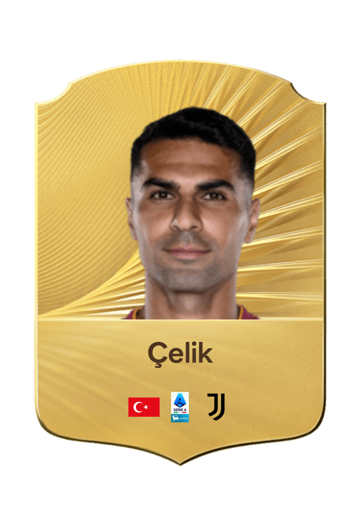
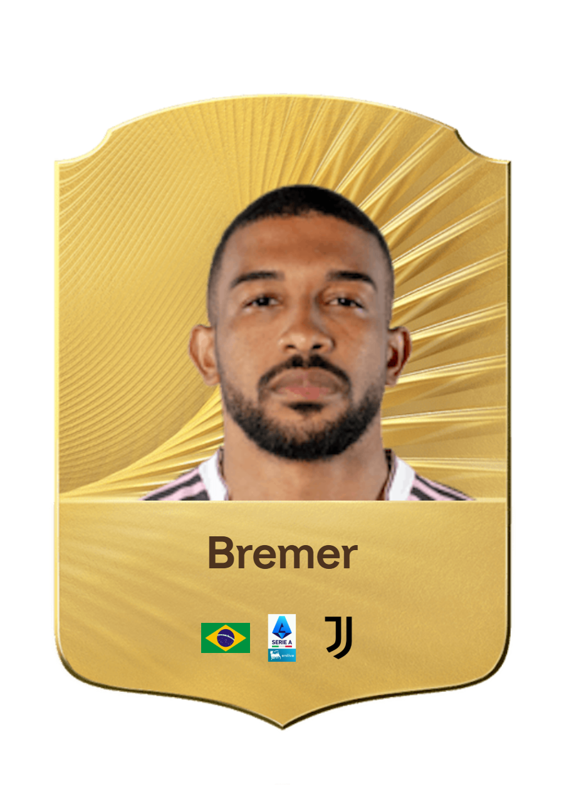
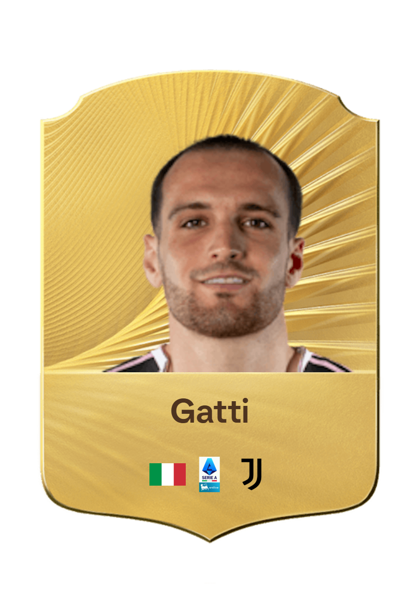
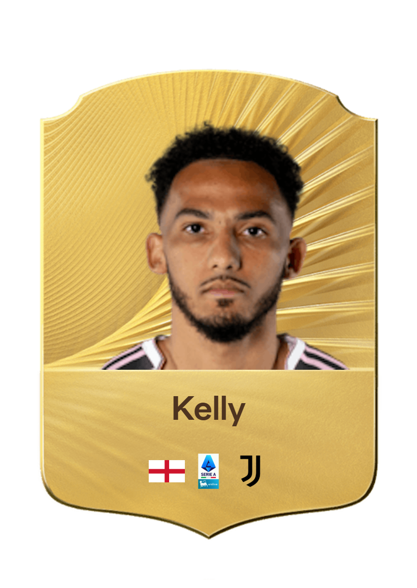
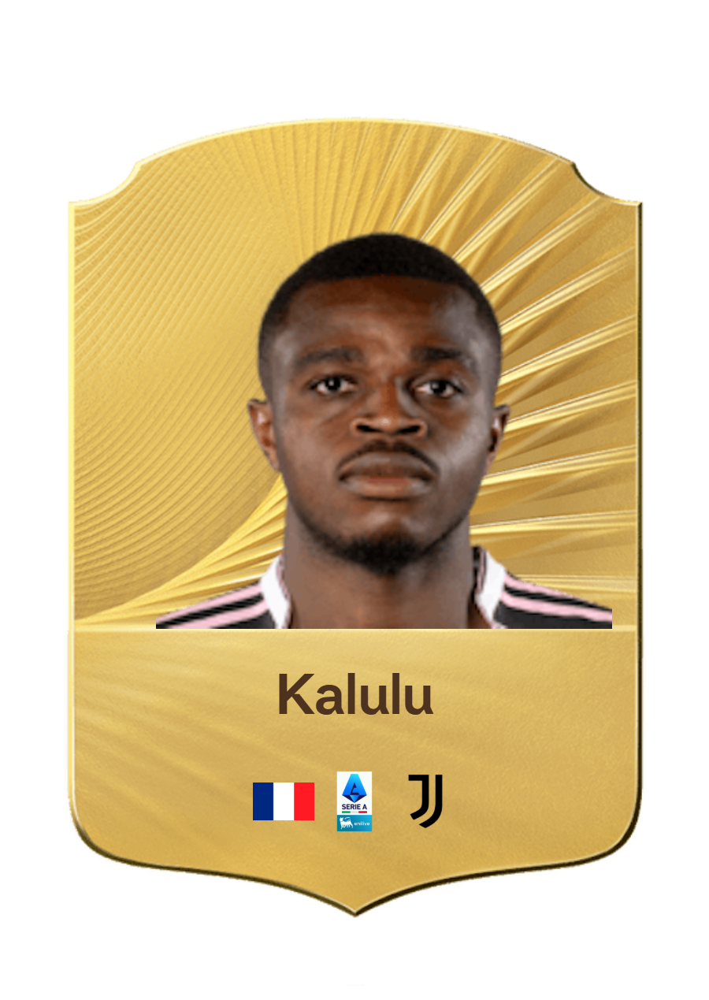
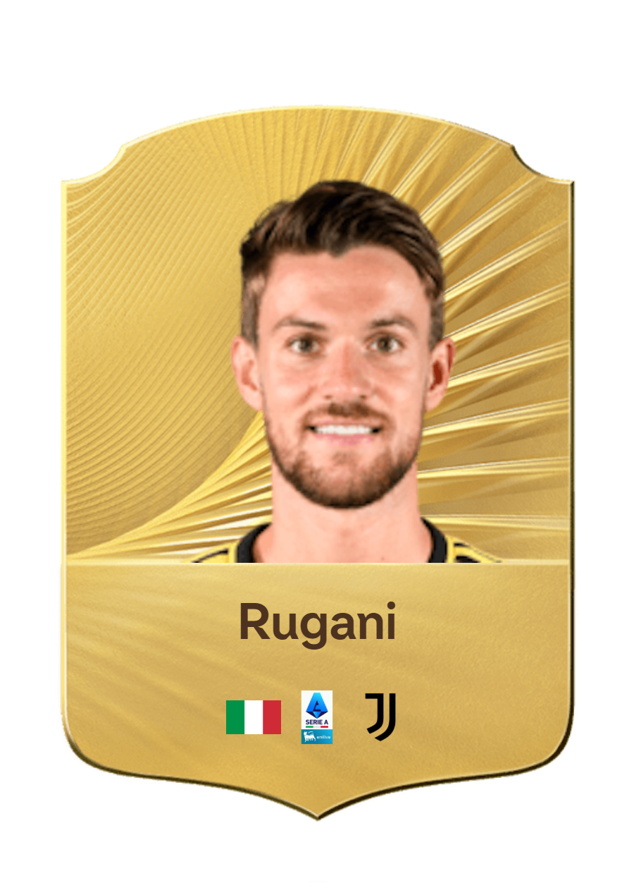
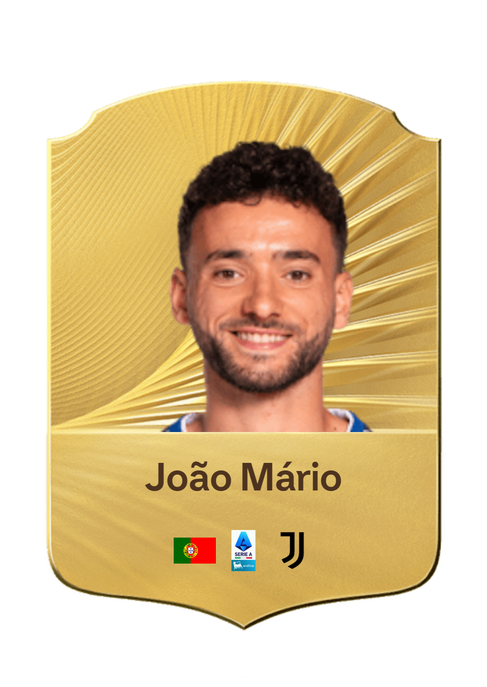
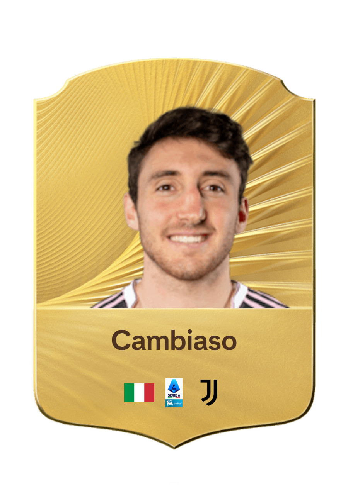
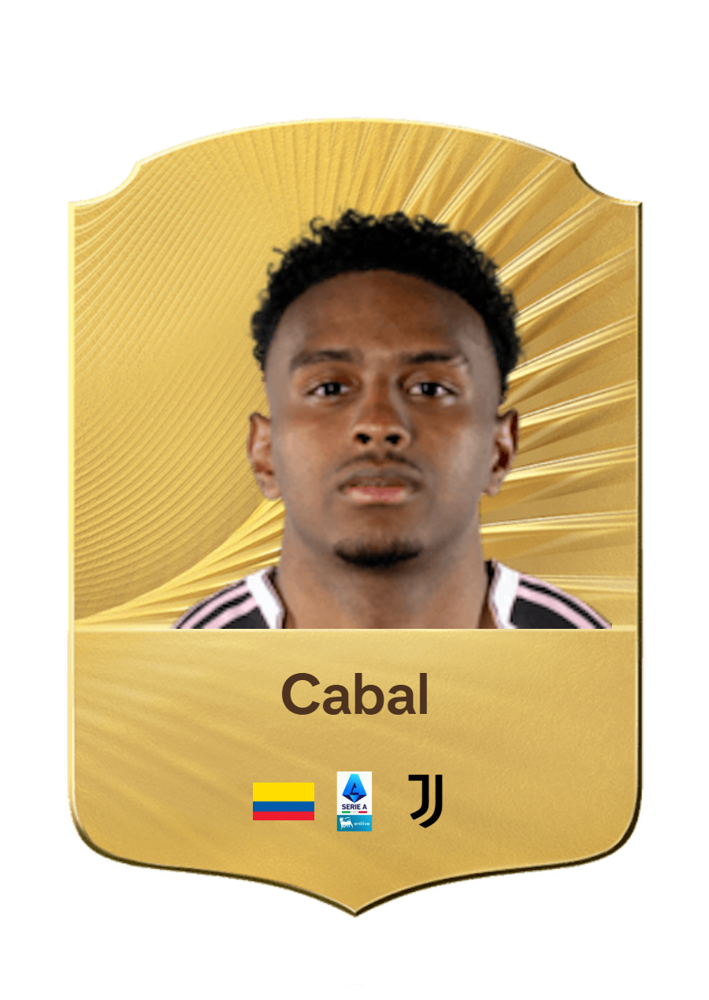
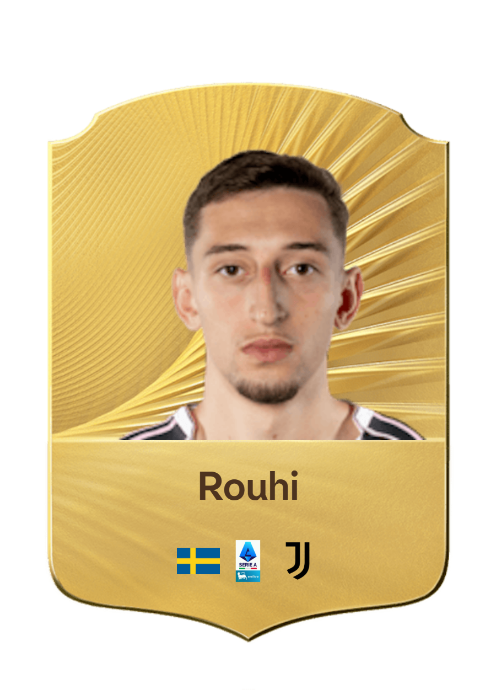

I difensori della Juventus FC rappresentano la solidità e la determinazione necessarie per proteggere la porta bianconera. Che giochino al centro della difesa o sulle fasce, uniscono forza fisica, intelligenza tattica e grande capacità di lettura del gioco. La loro complementarità permette di contrastare gli attacchi avversari, garantendo equilibrio difensivo e contribuendo allo stesso tempo alla costruzione delle azioni offensive.
Arrivato alla Juventus nel 2026, Zeki Çelik è un terzino destro turco che indossa la maglia numero 2. Si distingue per la sua solidità difensiva, la sua esperienza e la sua intensità nei duelli.

Arrivato alla Juventus nel 2022, Bremer è un difensore centrale brasiliano che indossa la maglia numero 3. Si distingue per la sua forza fisica, il gioco aereo e la qualità negli uno contro uno.

Arrivato alla Juventus nel 2022, Federico Gatti è un difensore centrale italiano che indossa la maglia numero 4. Si distingue per la sua aggressività, il gioco aereo e il suo spirito combattivo.

Arrivato alla Juventus nel 2025, Lloyd Kelly è un difensore centrale inglese che indossa la maglia numero 6. Si distingue per la sua forza fisica, la sua velocità e la sua capacità nei duelli difensivi.

Arrivato alla Juventus nel 2024, Pierre Kalulu è un difensore centrale francese che indossa la maglia numero 15. Si distingue per la sua velocità, la sua duttilità e la qualità negli anticipi difensivi.

Arrivato alla Juventus nel 2015, Daniele Rugani è un difensore centrale italiano che indossa la maglia numero 24. Si distingue per la sua eleganza difensiva, il suo senso della posizione e la sua affidabilità.

Arrivato alla Juventus nel 2025, João Mário è un terzino destro portoghese che indossa la maglia numero 25. Si distingue per la sua velocità, la sua tecnica e la sua capacità di spingere sulla fascia.

Arrivato alla Juventus nel 2022, Andrea Cambiaso è un terzino sinistro italiano che indossa la maglia numero 27. Si distingue per la sua tecnica, la sua duttilità e la sua capacità di creare gioco sulla fascia.

Arrivato alla Juventus nel 2024, Juan Cabal è un terzino sinistro colombiano che indossa la maglia numero 32. Si distingue per la sua velocità, la sua forza fisica e la sua duttilità difensiva.

Arrivato alla Juventus nel 2024, Jonas Rouhi è un terzino sinistro svedese che indossa la maglia numero 40. Si distingue per la sua velocità, la sua duttilità e la sua qualità tecnica sulla fascia.
